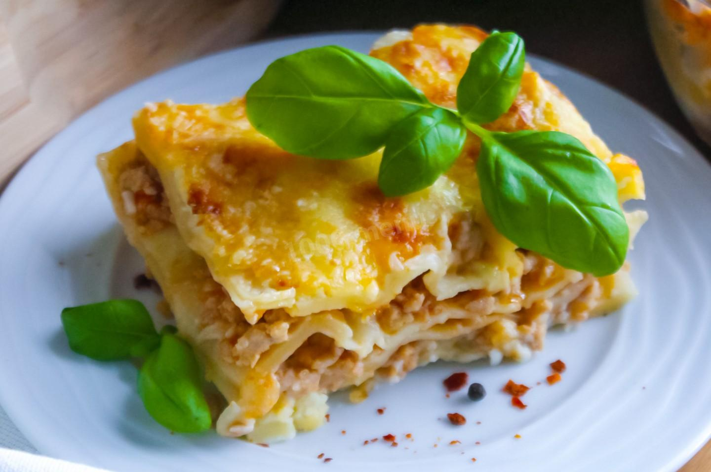

Лазанья

Описание рецепта
Блюдо, которое получило признание во всем мире, - это лазанья.
Вкусная и сытная, она идеально подходит для воскресного обеда
или ужина в холодное время года.
Ингредиенты
- Листы для лазаньи (сухие) - 6 шт.
- Фарш мясной (свинина/говядина) - 750 г
- Лук репчатый - 1 шт.
- Бульон мясной - 200 мл
- Сыр твёрдый - 250 г
- Томатная паста - 2 ст. ложки
- Масло растительное - 1 ст. ложка
- Соль - по вкусу
- Перец чёрный молотый - по вкусу
- Молоко - 500 мл
- Масло сливочное - 80 г
- Мука пшеничная - 60 г
- Мускатный орех молотый - 0,5 ч. ложки
- Соль - по вкусу
Шаги
- Подготавливаем все необходимые ингредиенты.
- Лук нарезаем мелкими кубиками.
- Лук обжариваем на растительном масле до золотистости.
- Как только лук стал золотистым и мягким, добавляем к нему фарш.
- Томатную пасту разводим мясным бульоном.
- Фарш солим, перчим, добавляем томатную пасту, смешанную с бульоном, и тушим минут 10.
- Готовим соус бешамель.
В сковороде растапливаем сливочное масло, добавляем просеянную муку,
непрерывно помешивая венчиком. Тонкой струйкой вливаем молоко, продолжая помешивать.
- Как только соус начнёт густеть, добавляем соль и мускатный орех.
Когда соус начнёт кипеть, выключаем огонь.
- Сыр натираем на крупной тёрке.
- Духовку разогреваем до 200 градусов.
Собираем лазанью.
Дно формы для запекания смазываем соусом бешамель.
Затем выкладываем слой листов лазаньи (их можно свободно ломать).
Сверху добавляем мясную начинку и равномерно распределяем.
На мясную начинку - снова соус бешамель.
Посыпаем сыром. Все слои выкладываем в том же порядке. Последним слоем должен быть сыр.
- Форму с лазаньей отправляем в разогретую
до 200 градусов духовку примерно на 30 минут (ориентируйтесь на свою духовку).
- Приятного аппетита!